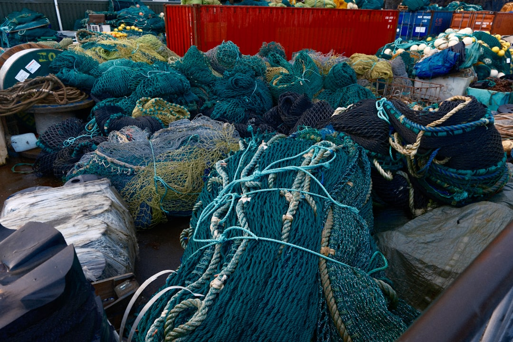
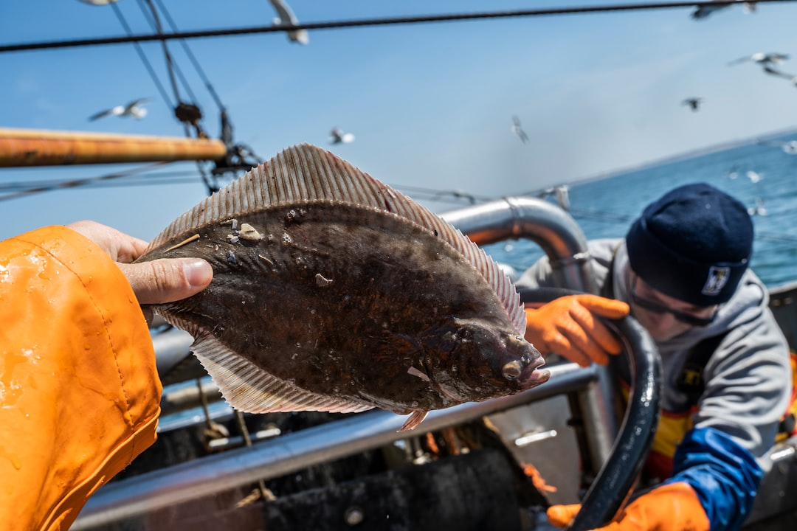
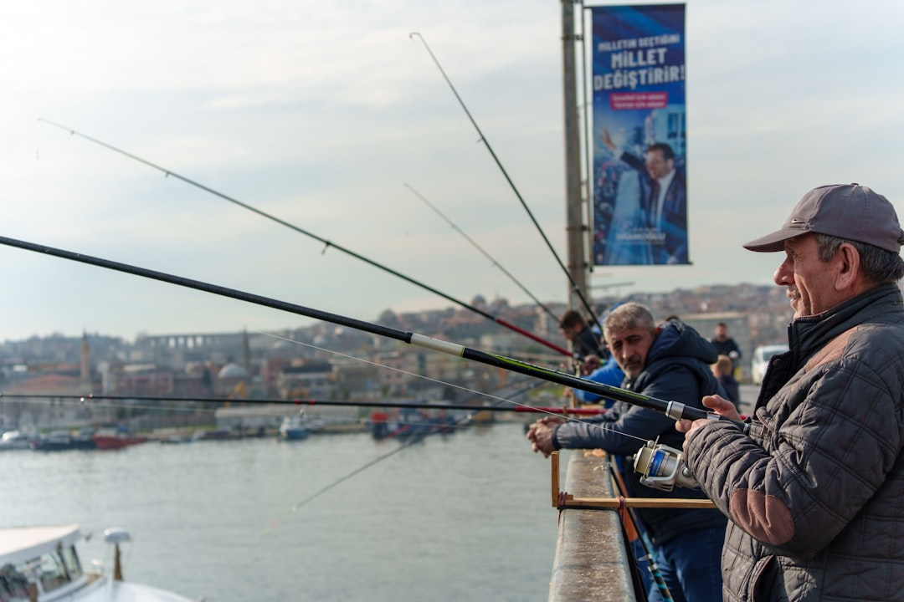
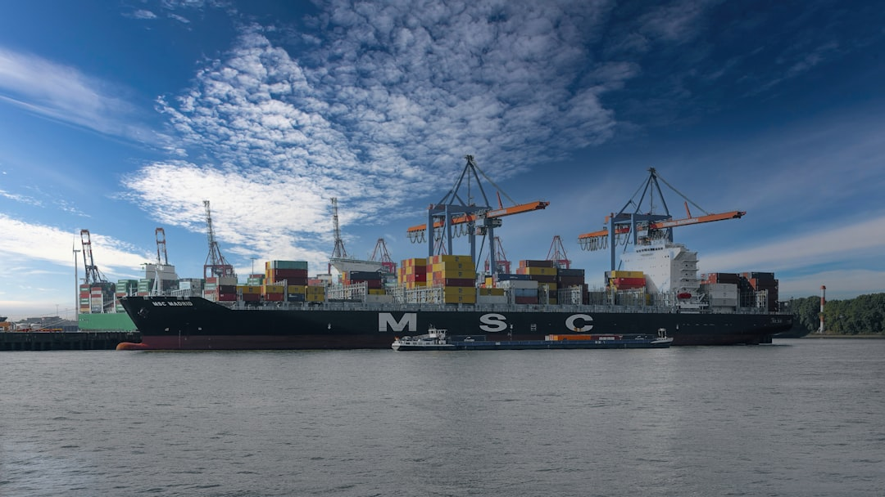

The Overfishing Crisis: Emptying Our Oceans
The Scale of Overfishing

Overfishing occurs when fish are caught faster than they can reproduce, leading to declining populations and disrupted marine ecosystems. According to the Food and Agriculture Organization (FAO), over 35% of global fish stocks are now overfished — a figure that has tripled since the 1970s.
Industrial fishing fleets equipped with advanced sonar technology, massive nets, and factory processing vessels can harvest thousands of tonnes of fish in a single trip. This level of extraction far exceeds the natural recovery capacity of most fish populations, pushing species toward ecological tipping points from which recovery may take decades.
Bycatch and Ecosystem Damage

Bycatch — the unintentional capture of non-target species — is one of the most devastating consequences of industrial fishing. An estimated 40% of the global marine catch is bycatch, including endangered sea turtles, sharks, dolphins, and seabirds. Most bycatch is discarded, often dead or dying, back into the ocean.
Bottom trawling, where heavy nets are dragged along the seafloor, causes additional ecological damage by destroying coral reefs, sponge gardens, and other delicate habitats that take centuries to develop. Scientists compare the impact of bottom trawling to clear-cutting ancient forests on land.
Impact on Fishing Communities

Overfishing does not only affect marine ecosystems — it threatens the livelihoods and food security of millions of people worldwide. Over 3 billion people depend on seafood as their primary source of protein, and approximately 60 million people work directly in fishing and aquaculture.
Small-scale fishers, who account for over 90% of the world's fishing workforce, are disproportionately affected. As large industrial fleets deplete fish stocks in coastal waters, artisanal fishers must travel further, work longer hours, and accept smaller catches. This creates a cycle of poverty and environmental degradation that is difficult to break without policy intervention and international cooperation.
Sustainable Seafood Choices

Consumers have significant power to drive change in the fishing industry through their purchasing decisions. Here are practical steps everyone can take:
- Look for certification labels: The Marine Stewardship Council (MSC) blue label indicates sustainably caught wild fish, while the ASC label covers responsibly farmed seafood.
- Choose lower-impact species: Sardines, mackerel, mussels, and oysters have lower environmental footprints than tuna, swordfish, or farmed salmon.
- Ask questions: When dining out, ask where the fish comes from and how it was caught. This signals to restaurants that consumers care about sustainability.
- Reduce waste: Plan meals to avoid throwing away seafood, and use the whole fish where possible.
- Support local fishers: Buy from local, small-scale fishmongers who use sustainable methods rather than large industrial suppliers.